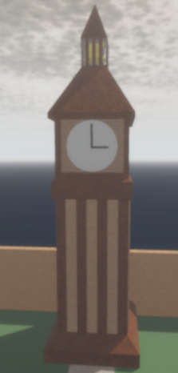

Gallery


I'm s4nctu4ry, and I love creating and playing games,
especially platformers like Mario and Sonic.
I know some Lua after developing games for 4 years now.
I've also learned a little bit about making websites
with HTML and CSS. I've contributed to some cool games on
Roblox like Tom & Dan, A Rabbit's Journey (which used to be
called Swift The Fastest), and Bloxhog RPG (which is being
rebranded as Mobius Universe). Right now, I'm making my own
game called "Wind Weaver" which is a 3D platformer collectathon
game where you use the wind to do certain things.
That's all you have to know.